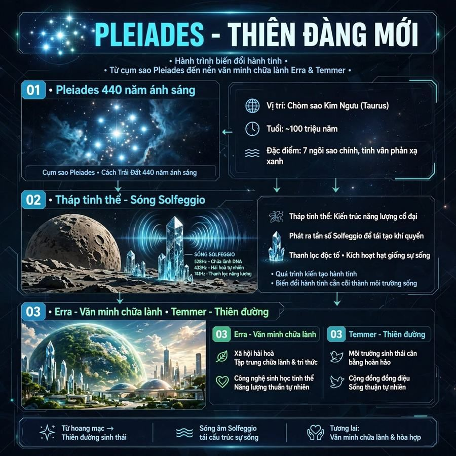
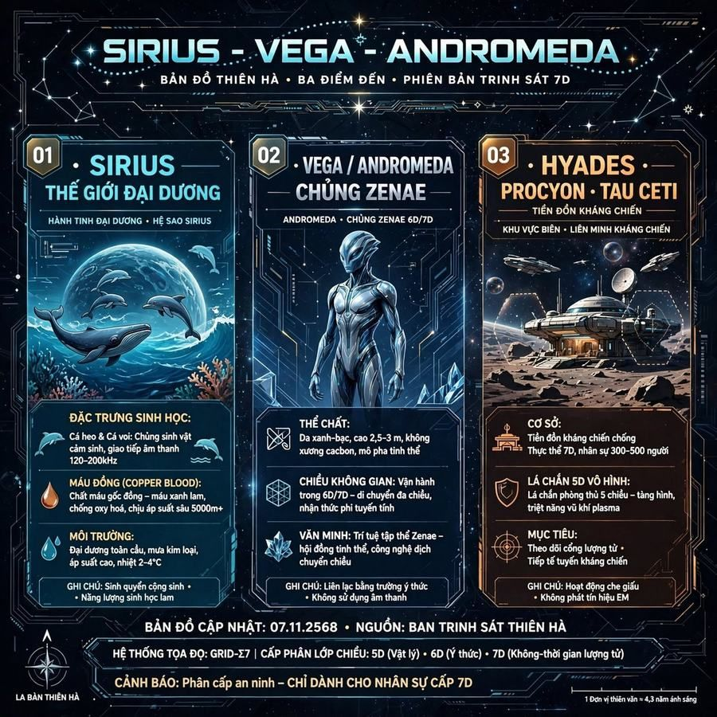

Trang chủ / Chuyên đề 2: Hành Trình Thiên Hà / Kỳ 12
Chuyên đề 2 · Kỳ 12 / 90
CUỘC ĐẠI DI CƯ & CÁC TRẠM ĐỊNH CƯ VŨ TRỤ

Sau thảm họa xâm lược tàn khốc của Đế chế Bò sát Ciakahrr tại nôi tổ tiên Lyra, hàng tỷ sinh mệnh từ 4 chủng tộc người nguyên thủy (Ahel, Noor, Taal và Laan) đã phải ngậm ngùi bước lên những con tàu không gian khổng lồ (Space Arks) để di tản. Nguồn sống cũ bị dập tắt, nôi tổ tiên chìm trong ngọn lửa chiến tranh, nhưng ngọn lửa ý thức của loài người chưa bao giờ lụi tàn.
Sự kiện đau thương đó đã mở ra một chương sử thiên hà vô cùng bi hùng: Cuộc Đại Di Cư (The Great Expansion).
Những con tàu di cư khổng lồ ấy đã rẽ sóng dải Ngân Hà đi về đâu? Họ đã vượt qua những hành trình dài hàng ngàn năm ánh sáng như thế nào? Và làm thế nào họ biến những hành tinh hoang sơ, khắc nghiệt thành những thiên đường 5D rực rỡ để bảo tồn nòi giống? Hãy cùng khám phá!
✦ ✦ ✦1. HÀNH TRÌNH VƯỢT KHÔNG-THỜI GIAN TRÊN CÁC SPACE ARKS
Hãy tưởng tượng bạn đang đứng trên đài quan sát của một con tàu Space Ark khổng lồ dài hàng chục cây số, nhìn lại qua ô cửa kính lượng tử: Hệ sao Man thân yêu — nơi lưu giữ kỷ niệm hàng triệu năm của loài người — đang dần thu nhỏ lại thành một điểm sáng mờ ạt giữa làn khói bụi nhiệt hạch.
A. Đô thị Sinh thái Không gian Tự chủ
Các con tàu Space Arks trong Cuộc Đại Di CƯ không đơn thuần là những chiếc phi thuyền cơ học. Chúng là những hệ sinh thái sống đa chiều (Bio-technological Biospheres):
- Hệ thống Sinh quyển Nhân tạo: Bên trong lòng tàu chứa đựng những khu rừng tinh thể, những dòng sông năng lượng và bầu khí quyển được duy trì ở dải tần số 5D.
- Kho lưu trữ Di truyền Vũ trụ: Các nhà khoa học Lyran đã thu thập hàng triệu mẫu DNA của động thực vật, thảo mộc quý hiếm và kho dữ liệu lịch sử tinh thể để mang theo trên chuyến hành trình dài.
- Đời sống trên tàu di cư: Nhiều thế hệ người di cư đã sinh ra, lớn lên và học tập ngay bên trong các con tàu Space Arks trong khi tàu du hành xuyên qua các nếp gấp không-thời gian (Wormholes & Stargates) để tìm kiếm những ngôi nhà mới.

2. PLEIADES (CHÒM SAO THẤT NỮ) — THIÊN ĐÀNG MỚI CỦA CHỦNG TỘC AHEL & TAAL
Điểm đến quan trọng và đông đúc nhất của các hạm đội di cư từ Lyra chính là cụm sao trẻ Pleiades (chòm sao Thất Nữ, cách Trái Đất ngày nay khoảng 440 năm ánh sáng).
A. Thách thức từ một Cụm sao Trẻ
Thời điểm hạm đội di cư đến nơi, Pleiades là một cụm sao vừa mới được hình thành trong vũ trụ. Các hành tinh tại đây chủ yếu là những khối đá hoang sơ, bầu khí quyển nhiễm độc kim loại và chưa hề có sinh quyển sẵn sàng cho sự sống dạng người.
B. Kỳ tích Địa khai hóa Tần số (Frequency Terraforming)
Bằng việc kết hợp giữa khoa học năng lượng Etheric và trực giác tâm linh sâu sắc, các thuộc địa di cư đã tạo nên một kỳ tích chưa từng có:
- Công nghệ Sóng Âm Tinh thể: Họ thả hàng ngàn tháp tinh thể năng lượng xuống bề mặt các hành tinh như Erra, Temmer và Sillo (thuộc hệ sao Taygeta). Các tháp này phát ra dải sóng âm tần số Solfeggio, làm dịu đi các hoạt động địa chất, lọc sạch bầu khí quyển và điều chỉnh dải từ trường hành tinh.
- Hình thành Văn minh Pleiades (Errahel): Nhánh chủng tộc Ahel di cư đã biến hành tinh Erra thành một thiên đường rực rỡ. Họ xây dựng nên một nền văn minh hòa bình, chuyên về nghệ thuật chữa lành, âm thanh và bảo tồn tri thức tâm linh cổ xưa. Người Pleiades sau này đã trở thành một trong những người anh em thiên hà thân thiết nhất đối với con người Trái Đất!

3. VEGA & ANDROMEDA (ZENAE) — DÒNG VĂN MINH TÂM THỨC SIÊU CHIỀU
Trong khi nhánh Ahel tiến về Pleiades, nhánh người di cư thuộc chủng tộc Noor và một phần Taal lại chọn hướng đi về hệ sao Vega và sau đó tiếp tục mở rộng sang thiên hà hàng xóm — Thiên hà Tiên Nữ (Andromeda / Zenae).
A. Sự thích nghi Sinh học & Làn da Xanh da trời (Blue Skin)
Do điều kiện bức xạ năng lượng độc đáo tại các hành tinh thuộc chòm sao Andromeda và sự tác động của dải tần số mật độ 6D/7D:
- Thể xác của nhánh người di cư tại đây đã trải qua một cuộc biến đổi sinh học tự nhiên vô cùng kỳ diệu.
- Làn da của họ chuyển sang sắc xanh da trời hoặc sắc bạc ánh kim (được biết đến trong các tài liệu thiên hà là chủng tộc Zenae hay người Andromeda).
- Chiều cao của họ phát triển vượt trội (từ 2,5m đến hơn 3m), với đôi mắt to tròn chứa đựng sự sâu thẳm của vũ trụ.
B. Bậc thầy Du hành Ý thức & Hội đồng Zenae
Nhánh văn minh Zenae tại Andromeda không chú trọng phát triển các thuộc địa vật lý phô trương. Họ tập trung toàn bộ nguồn lực vào việc làm chủ Tâm thức Siêu chiều (Multidimensional Consciousness):
- Họ có khả năng dịch chuyển ý thức xuyên qua các dải thực tại mà không cần đến tàu không gian.
- Họ thành lập Hội đồng Zenae (Andromedan Council) — một tập thể các sinh mệnh tiến hóa cao đóng vai trò như những nhà cố vấn trí tuệ và bảo hộ hòa bình cho cả dải Ngân Hà.
4. HỆ SAO SIRIUS (ASHKERA & KATAYY) — BẬC THẦY DI TRUYỀN & ĐẠI ĐƯƠNG
Một hạm đội di cư lớn khác từ Lyra đã chọn dừng chân tại hệ sao kép rực rỡ Sirius (đặc biệt là hệ sao Sirius A và Sirius B, cách Trái Đất khoảng 8,6 năm ánh sáng).
A. Cuộc sống trên các Hành tinh Đại dương (Oceanic Worlds)
Nhánh di cư đến Sirius (được gọi là chủng tộc Katayy hoặc Ashkera) đã tìm thấy những hành tinh bao phủ bởi các đại dương nước ngọt tinh khiết và ấm áp.
- Sự hòa hợp với Sinh vật Thủy sinh cổ đại: Tại đây, người di cư Lyran đã gặp gỡ và học hỏi tri thức từ các sinh mệnh Cetacean tiên tiến (tổ tiên của loài Cá Cá Cá heo và Cá Voi thông thái). Họ xây dựng nên các đô thị ngầm dưới lòng biển và các hòn đảo tinh thể nổi trên mặt nước.
- Máu gốc Đồng (Copper-based Blood): Để thích nghi với môi trường áp suất nước và nguồn năng lượng ánh sáng từ hai ngôi sao mẹ, cấu trúc máu của người Sirius phát triển hàm lượng vi chất đồng cao, mang lại cho họ màu da ánh rồng quý phái và tuổi thọ kéo dài hàng ngàn năm.
B. Trung tâm Khoa học Di truyền Thiên hà
Người Sirius trở thành những bậc thầy số một về Kỹ thuật Di truyền Sinh học (Genetic Engineering). Họ chính là những kiến trúc sư đã đóng góp nhiều công sức nhất trong việc thiết kế các mẫu gen thảo mộc, động vật và sau này là sự nâng cấp bộ gen cho nhân loại Trái Đất!
✦ ✦ ✦5. HYADES, PROCYON, TAU CETI & EPSILON ERIDANI — NHỮNG THÀNH TRÌ KHÁNG CHIẾN
Không phải chuyến di cư nào cũng diễn ra trong sự êm đềm. Hạm đội Ciakahrr Bò sát sau khi chiếm được Lyra đã không dừng lại; chúng tiếp tục cử các hạm đội đi săn tìm và truy quét các thuộc địa di cư của con người.
Để bảo vệ các thế giới hòa bình ở tuyến sau như Pleiades hay Sirius, một nhóm các chiến binh dũng cảm từ chủng tộc Taal và Ahel đã chủ động di tản đến các hệ sao biên giới như Hyades, Procyon, Tau Ceti và Epsilon Eridani.
A. Rào chắn Tần số 5D & Công nghệ Tàng hình Năng lượng
- Tại các thuộc địa chiến lược này, người di cư đã xây dựng nên hệ thống trạm quan sát và mạng lưới lá chắn phòng thủ điện từ khổng lồ.
- Họ học cách nâng tần số nhận thức của toàn bộ hành tinh lên dải mật độ 5D, khiến các hành tinh của họ trở nên "vô hình" trước các hệ thống radar và cảm biến công nghệ 3D/4D của phe Bò sát xâm lược.
B. Sự phôi thai của Khối Kháng chiến Vũ trụ
Chính từ những trạm đồn trú kiên cường tại Procyon và Tau Ceti, ý tưởng về một liên minh phòng thủ chung giữa các chủng tộc dạng người đã bắt đầu được thảo luận. Đây chính là tiền thân của Liên đoàn Thế giới Thiên hà (Galactic Federation of Worlds) sau này!
✦ ✦ ✦6. ĐIỂM DỪNG CHÂN ĐẶC BIỆT: HÀNH TINH TRÁI ĐẤT (TERRA)
Trong suốt Cuộc Đại Di Cư kéo dài hàng ngàn năm, các hạm đội thăm dò của người di cư Lyran đã phát hiện ra một hành tinh xanh tuyệt đẹp nằm ở dải ngoại vi của Thiên hà — Trái Đất (Terra).
Thời điểm đó, Trái Đất là một hành tinh hoang sơ mang nguồn năng lượng sinh học vô cùng dồi dào.
- Các đoàn di cư đầu tiên đã hạ cánh xuống Trái Đất, thiết lập các căn cứ nghiên cứu và bắt đầu gieo mầm những thế hệ sinh mệnh đầu tiên.
- Trái Đất được coi là "Vùng đất Hứa" (The Promised Land) — nơi mà di sản di truyền của tất cả các nhánh di cư (Pleiades, Sirius, Andromeda, Orion, Lyra) có thể một ngày nào đó hội tụ lại để tạo nên một chủng tộc hoàn toàn mới!
7. BÀI HỌC VÀ KÍ ỨC DI TRUYỀN TRONG MỖI STARSEED NGÀY NAY
Cuộc Đại Di Cư từ nôi Lyra không chỉ là một sự kiện lịch sử cổ xưa. Nó đã cắm sâu vào cấu trúc DNA của mỗi con người Trái Đất những kí ức tế bào (Cellular Memory) mãnh liệt:
- Cảm giác "Thèm quê nhà" (Homesickness): Bạn có bao giờ nhìn lên các chòm sao Pleiades, Sirius hay Andromeda và cảm thấy một nỗi nhớ thương vô bờ bến mà không thể giải thích bằng logic 3D? Đó chính là tiếng gọi từ ngôi nhà cũ mà tổ tiên linh hồn bạn từng sinh sống trong Cuộc Đại Di Cư!
- Khả năng thích ứng phi thường: Di sản di truyền từ Cuộc Đại Di Cư trao cho con người Trái Đất khả năng sinh tồn và thích ứng cực cao trước mọi biến động năng lượng và môi trường.
- Mã kết nối Thiên hà: Dù trải qua hàng ngàn năm bị phong tỏa trong Ma trận 3D, sợi dây liên kết giữa con người Trái Đất và những người anh em thiên hà tại Pleiades, Sirius, Andromeda chưa bao giờ bị ngắt đứt.
Sau Cuộc Đại Di Cư, khi các thuộc địa người được thiết lập vững chắc, xung đột bùng nổ tại chòm sao Orion giữa Mạng lưới kiểm soát Nebu và Khối Liên minh Kháng chiến đã diễn ra như thế nào? ✦